Como usar o Cofre
Um passo a passo de cada tela, com as imagens do próprio app. Siga na ordem na primeira vez: em 10 minutos seu mês está organizado.
01Primeiros passos
Criar a sua conta
- Abra o link do app e toque em Criar conta.
- Preencha nome, e-mail e senha (mínimo 6 caracteres) e repita a senha.
- Marque Li e estou ciente do termo de ciência e toque em Criar conta.
Esqueceu a senha? Na tela de entrar, toque em Esqueci minha senha e siga o link que chega no seu e-mail.
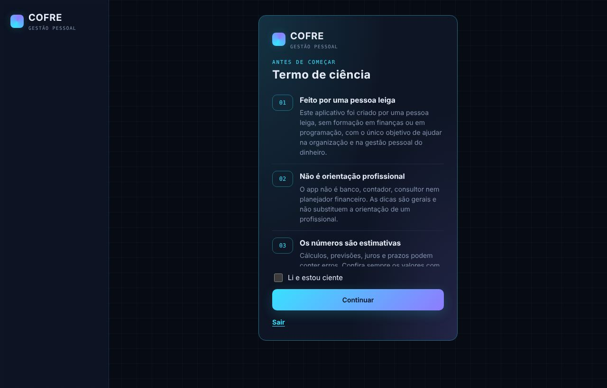
Trocar os exemplos pelos seus números
Na primeira vez o app mostra dados de exemplo para você ver como tudo funciona. Quando quiser começar, toque em Apagar exemplos e começar (o botão pede confirmação com um segundo toque).
02Painel
É a sua visão geral do mês. Mostra:
- Saldo em conta: saldo inicial + tudo que entrou − tudo que saiu, mês a mês.
- % comprometido: quanto da renda fixa já está preso em contas e parcelas (verde até 50%, amarelo até 70%, vermelho acima).
- Para onde foi o dinheiro: gastos do mês por categoria.
- Próximos 12 meses: barras com a sobra prevista e a linha das parcelas.
- Falta pagar este mês e o Diagnóstico automático com alertas e sugestões.
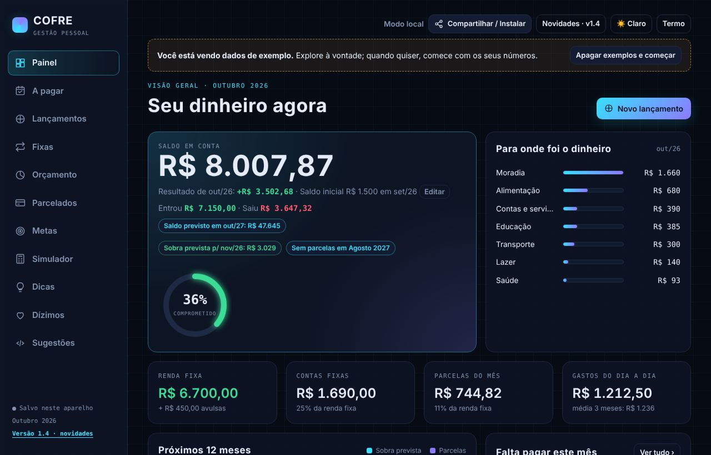
03Fixas e saldo inicial
Aqui ficam as coisas que se repetem todo mês. O app usa esses valores para prever o futuro.
- Toque em Nova recorrente.
- Escolha Entrada (salário, renda da família, app, aluguel recebido…) ou Gasto (aluguel, luz, internet…).
- Informe valor, dia do mês e categoria. Para contas, preencha Pagar para (ex.: Celesc) e, se cair no cartão, escolha o cartão.
Saldo inicial
No fim da aba Fixas (ou no Painel) toque em Informar saldo inicial: some o que você tem nas contas e na carteira e escolha o mês de início. A partir daí o Painel mostra o seu saldo real.
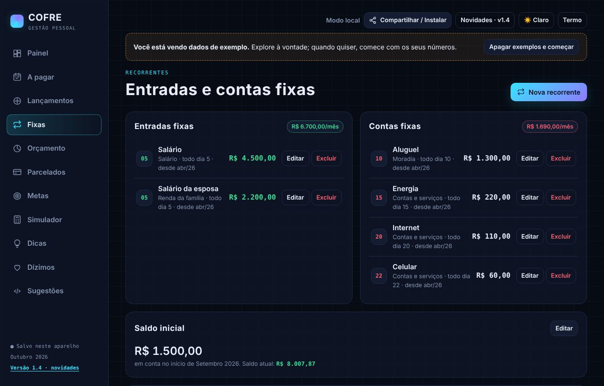
04Lançamentos
Para os gastos e entradas do dia a dia que não se repetem: mercado, combustível, farmácia, um trabalho extra.
- Toque em Novo lançamento.
- Escolha Entrada ou Gasto, escreva a descrição, o valor, a data e a categoria.
- Se pagou no cartão de crédito, escolha o cartão: o valor vai sozinho para a fatura certa.
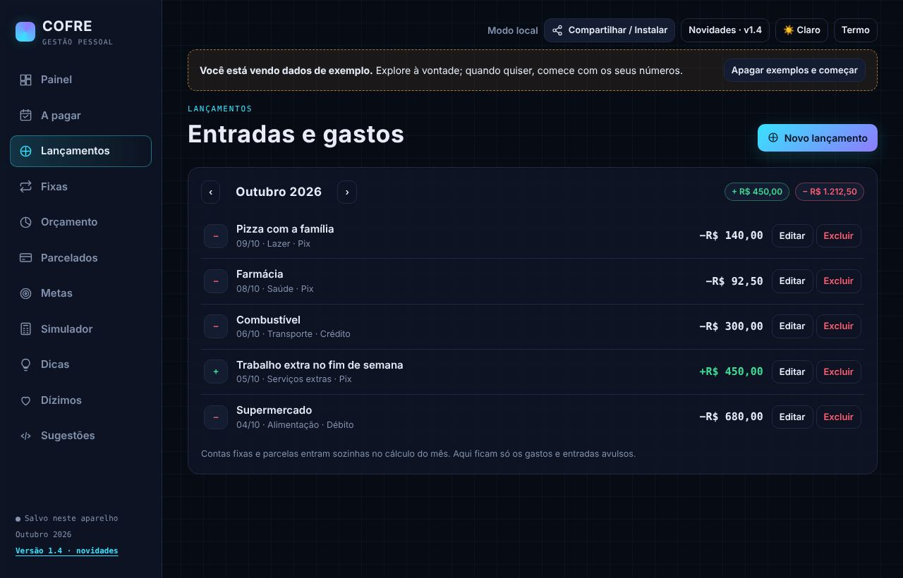
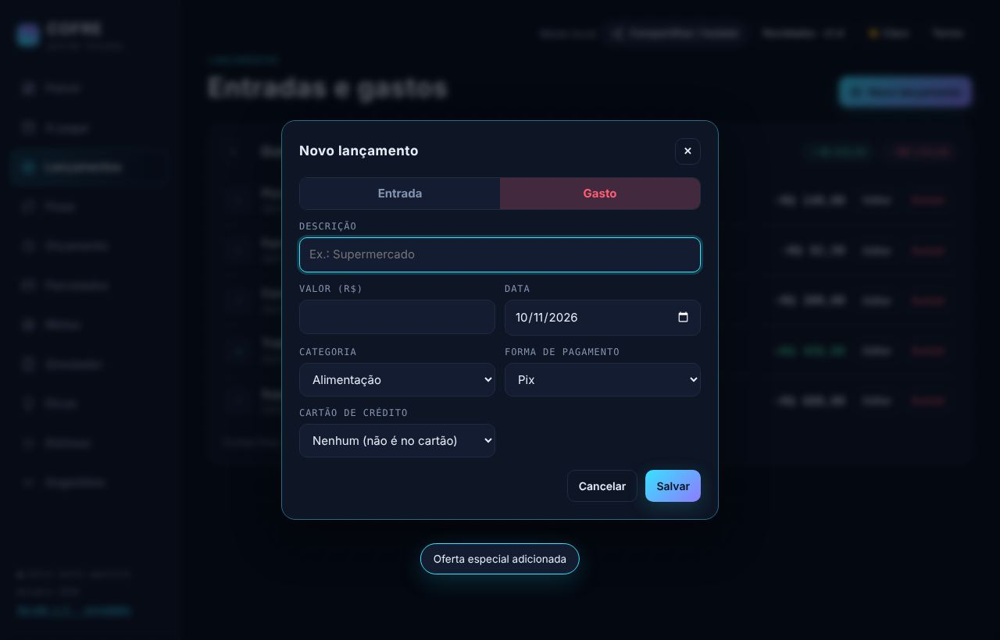
Para corrigir, toque em Editar. Para apagar, toque em Excluir e depois em Confirmar.
05A pagar e cartões
Mostra tudo o que você precisa pagar no mês, em ordem de vencimento, com para quem pagar e o valor.
Cadastrar um cartão
- Toque em + Cartão.
- Informe o nome (ex.: Nubank), o dia que a fatura fecha e o dia de pagamento.
Compras feitas a partir do dia de fechamento vão para a fatura do mês seguinte. O app calcula isso sozinho.
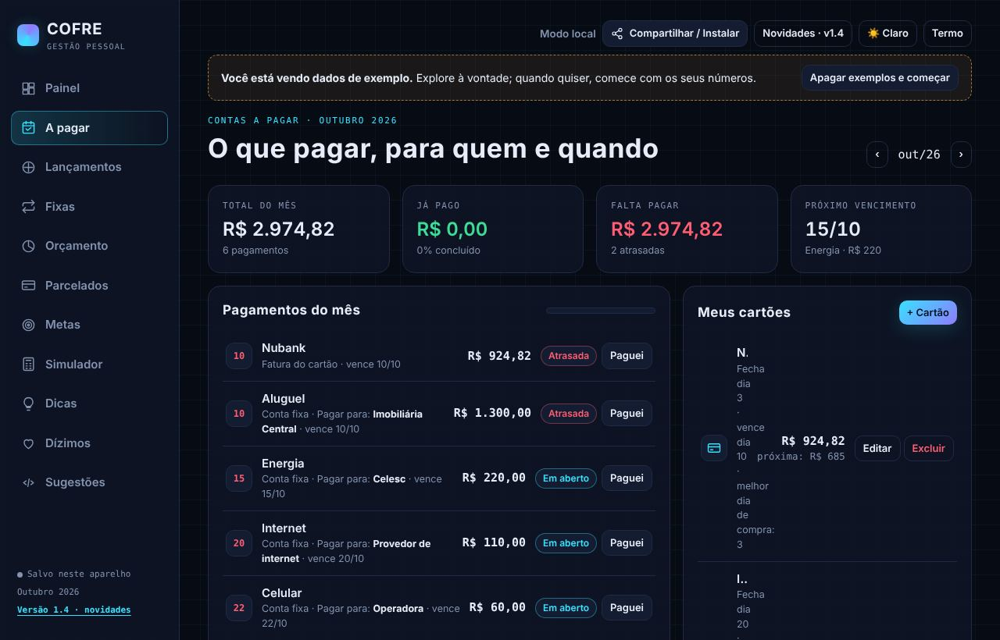
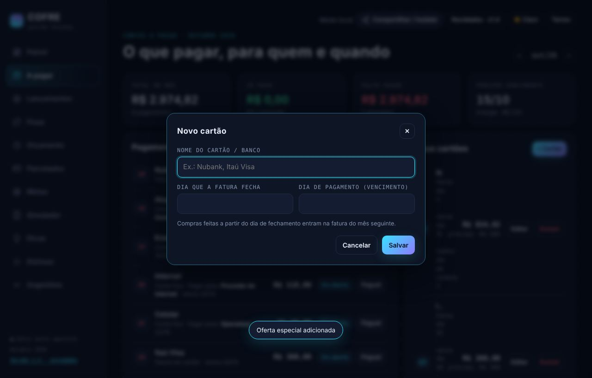
Quando pagar, toque em Paguei. Os status mostram Atrasada, Vence em X dias ou Pago.
06Parcelados
Cadastre compras parceladas para saber quanto falta e quando quita.
- Toque em Nova compra parcelada.
- Informe o valor da compra, o número de parcelas, os juros ao mês (0 se for sem juros), o mês da 1ª parcela e o cartão, se for no cartão.
O app mostra a parcela, os quadradinhos de parcelas pagas, quanto falta, o mês da quitação e quanto você paga de juros. No topo aparece a data em que você fica livre de parcelas.
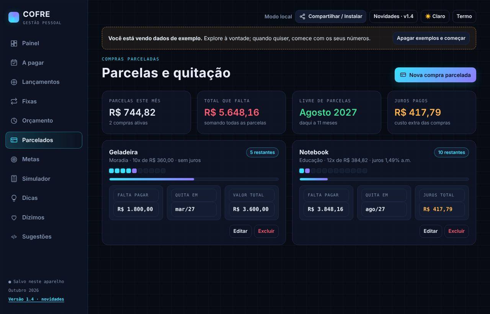
07Orçamento
Mostra quanto é recomendado gastar em cada categoria, de acordo com a sua renda, e quanto você já gastou.
- A renda base soma seu salário, as extras e, se quiser, a renda da família. Use o botão Calcular só com o meu salário para alternar.
- Cada categoria tem uma barra: verde dentro do recomendado, amarela acima de 80%, vermelha listrada quando passou.
- Toque no % de uma categoria para ajustar à sua realidade. Voltar ao padrão restaura os valores sugeridos.
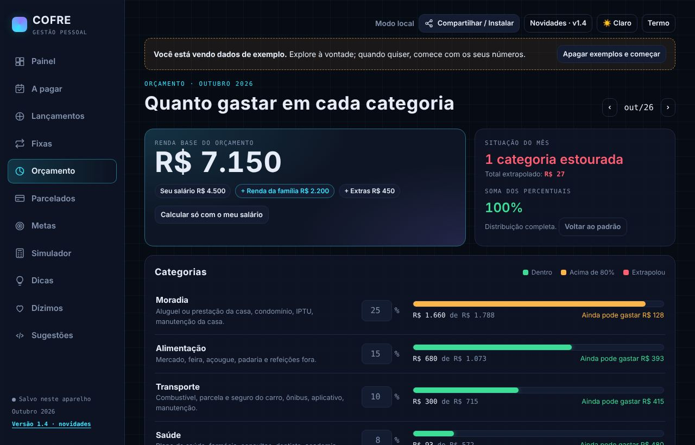
08Dízimos e ofertas
Calcula o dízimo e a oferta de cada entrada do mês: seu salário, o da esposa, renda extra, e assim por diante.
- Escolha a oferta padrão (0% a 20%) na barra ou nos botões rápidos.
- Confira a lista Por entrada: o dízimo (10%) e a oferta já vêm calculados. Você pode mudar qualquer valor; para voltar ao cálculo, toque em voltar ao automático.
- Desmarque Incluir no dízimo se alguma entrada não deve entrar.
- Quando entregar, toque em Devolver naquela entrada (ou em Marcar todas como devolvidas). O valor vai para Doações e aparece no Orçamento.
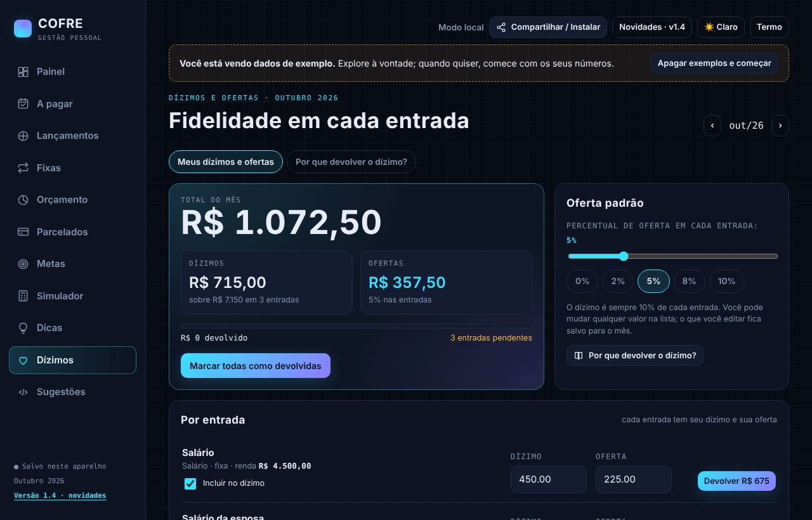
Ofertas especiais
Para ofertas diferentes (missões, construção, campanha, ajuda a alguém), toque em + Oferta especial, informe para quê e o valor. Marque Repetir todo mês se for mensal.
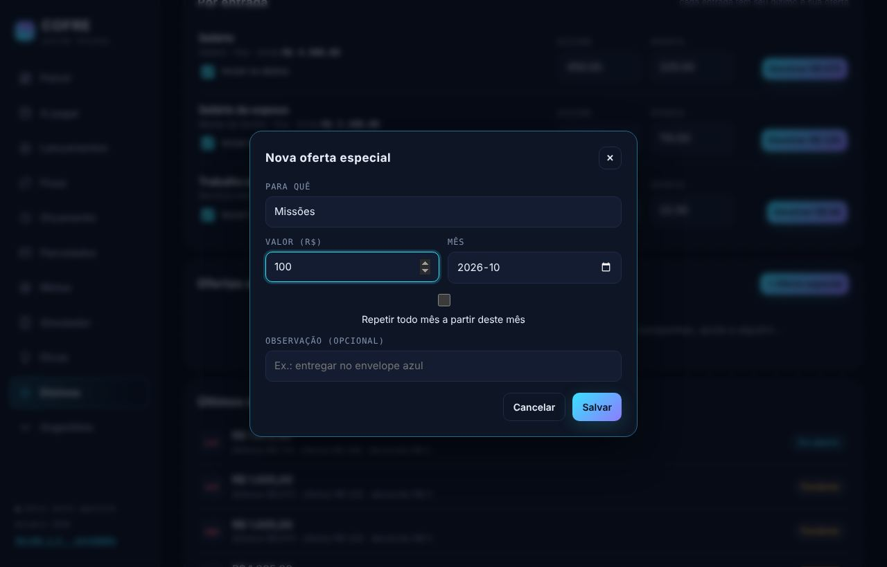
Por que devolver o dízimo?
Na parte de cima da aba, toque em Por que devolver o dízimo? para abrir o estudo bíblico com 9 lições. Cada lição tem textos para ler na Bíblia, reflexão e uma pergunta para conversar em família ou em grupo.
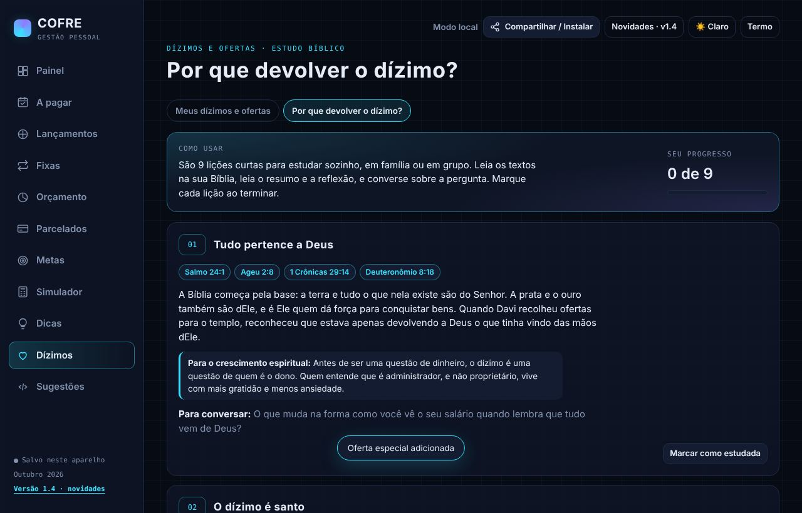
09Metas
Descubra quanto tempo leva para juntar um valor.
- Calculadora rápida: digite o valor e veja em quanto tempo junta guardando a sobra prevista.
- Nova meta: dê um nome (reserva de emergência, carro…), o valor, quanto já tem e escolha entre usar a sobra do mês ou guardar um valor fixo.
- Quando guardar dinheiro, toque em + Guardei dinheiro.
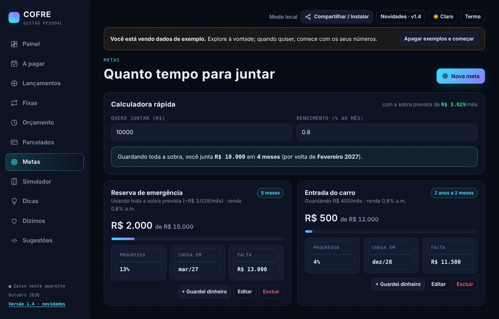
10Simulador
Antes de comprar algo grande (carro, móveis, celular), preencha o preço, a entrada, as parcelas, os juros e o custo mensal extra (seguro, manutenção…). O app diz:
- o valor da parcela e o total pago;
- quanto você paga a mais por parcelar;
- quanto da renda fica comprometido e quanto sobra por mês;
- em quanto tempo você juntaria para pagar à vista;
- e um veredito: cabe, dá, mas pesa ou não recomendado agora.
Se decidir comprar, toque em Lançar como compra parcelada.
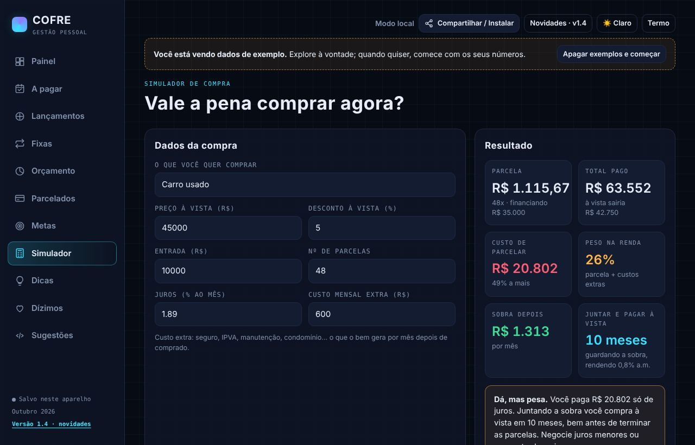
11Dicas
Orientações práticas sobre gestão do dinheiro, carro, casa, roupas e dívidas, ao lado de um diagnóstico com os seus números.
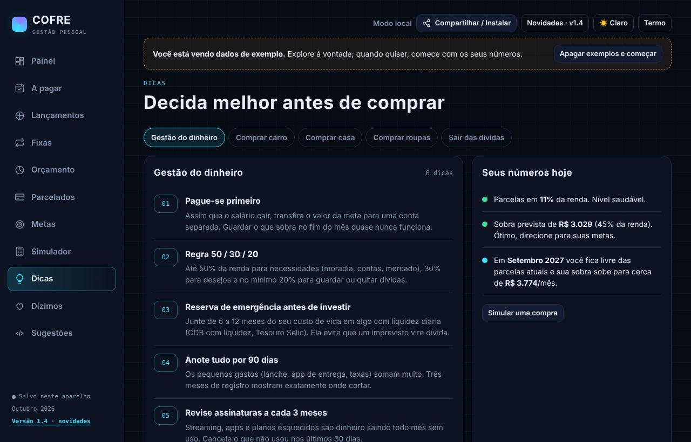
12Sugestões
Tem uma ideia ou encontrou um problema? Escreva em Sugestões, escolha o tipo e toque em Registrar. A mensagem vai direto para o desenvolvedor, e você acompanha o status (Nova, Em análise, Feita) e a resposta dele.
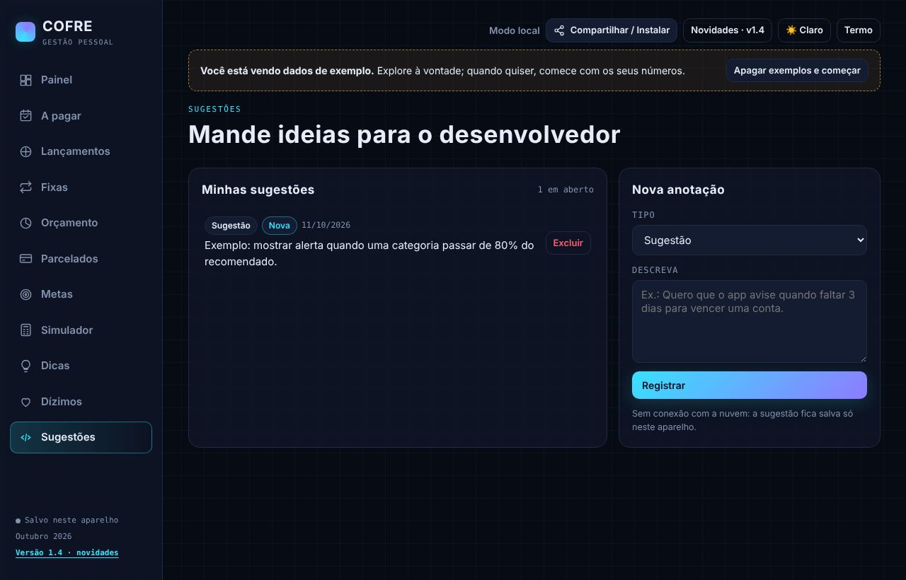
13Tema, novidades e instalar
- ☀️ Claro / 🌙 Escuro: troca o visual do app. A escolha fica salva no aparelho.
- Novidades: mostra o que mudou em cada versão.
- 🔄 Atualizar: aparece quando sai uma versão nova. Um toque e o app recarrega atualizado.
- Compartilhar / Instalar: copia o link do app e mostra como instalar no Android, iPhone e Windows.
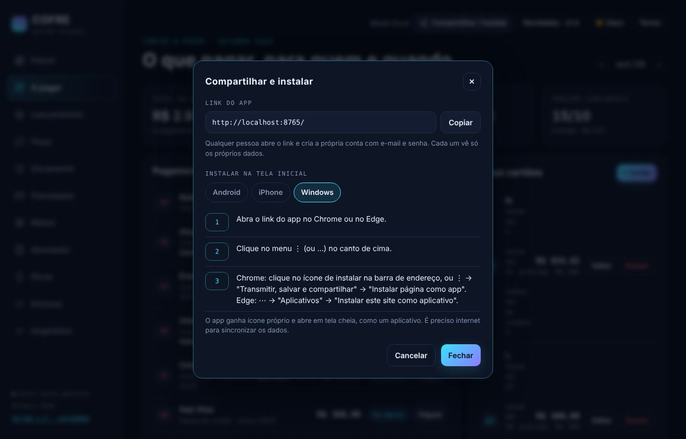
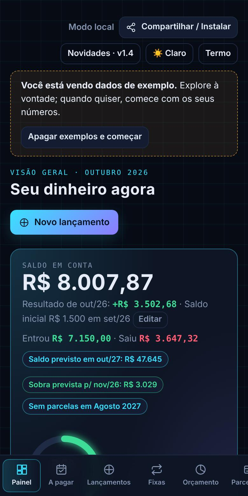
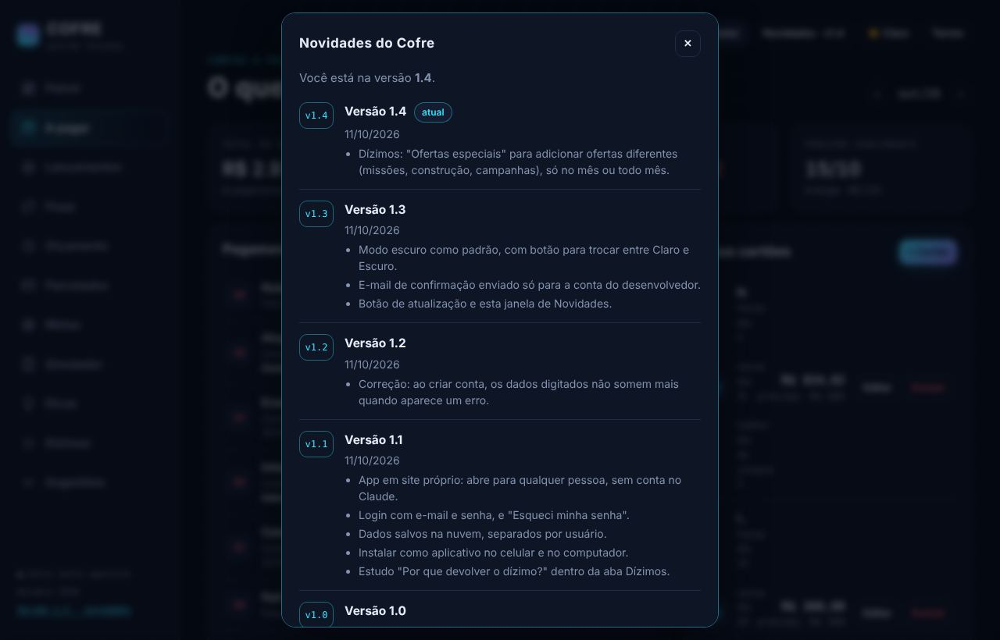
14Dúvidas comuns
Outras pessoas veem os meus dados?
Não. Cada conta só vê os próprios dados. Nem o desenvolvedor consegue ler as suas finanças.
Posso usar no celular e no computador?
Sim. Entre com o mesmo e-mail e senha: tudo fica salvo na nuvem e aparece nos dois.
O rodapé mostra "Salvo neste aparelho". E agora?
Significa que você está sem internet ou não entrou com a sua conta. Quando a conexão voltar, o app salva na nuvem (o rodapé passa a mostrar "Salvo na nuvem").
Os números do app são exatos?
São estimativas a partir do que você cadastra. Confira sempre com o seu banco, faturas e contratos antes de decidir.